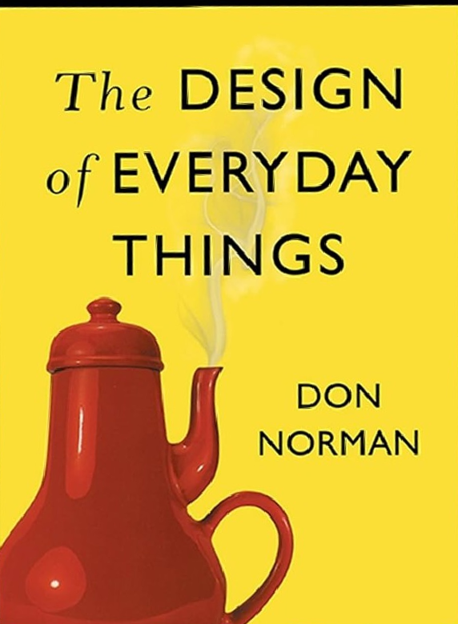
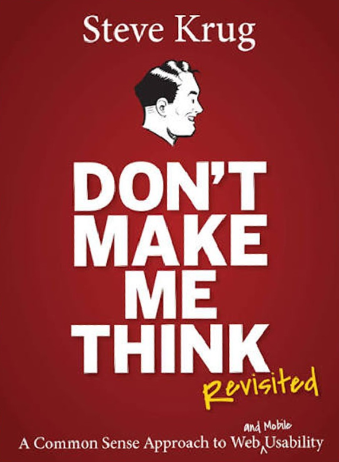
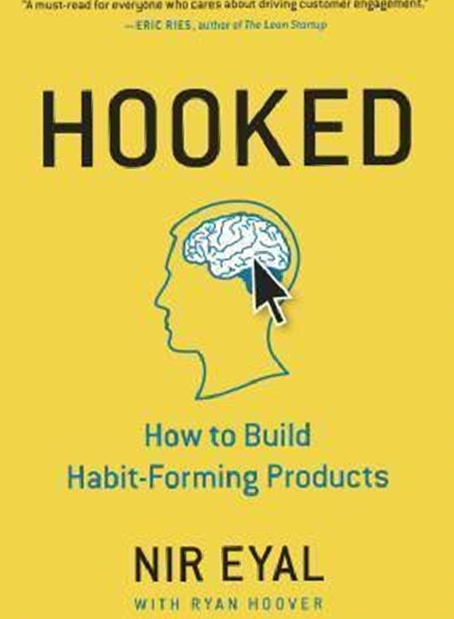
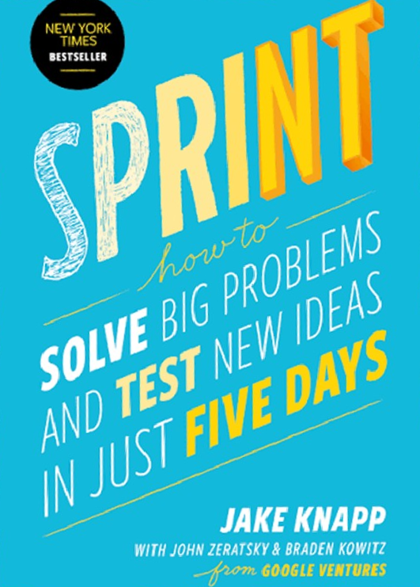

Start here. It's the book that taught me to blame the design, not the user.

Affordances, signifiers, feedback, the vocabulary every design critique borrows from.
The most practical usability guide out there, and you can finish it in a weekend.

People scan, they don't read. Design for that, and test with three users, not thirty.
A clear model for why people come back to a product. Worth knowing, worth using carefully.

Trigger → action → reward → investment. Once you see the loop, you see it everywhere.
A step-by-step way to answer big product questions before anyone writes code.

Map, sketch, decide, prototype, test. Five days that save months of building the wrong thing.
In this order. Each one builds on the last.
Norman gives you the language to explain why something works, or doesn't.
Krug turns theory into checks you can run on your next review.
Eyal explains what brings people back, and where the ethical line sits.
Knapp shows you how to prove it with real users in a single week.